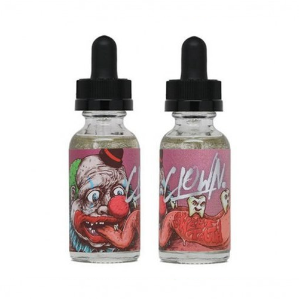

Clown Sweet Tooth

Описание
- Объём: 30мл
- Крепость: 3мг
- PG/VG: 35/75
- Вкус: сахарная вата, малиновый сироп
- Стоимость: 700 Р
Ни один карнавал в Америке не обходится без главного атрибута праздника - сладкой сахарной ваты. Казалось бы, никаких секретов в её приготовлении уже давно не существует - но остаются секреты ингридиентов, которыми ярмарочники готовы радовать посетителей. Сочная спелая малина добавляет прекрасной сладости вкусу, постоянно забирая пальму первенства у сахарной ваты и отлично её дополняет.